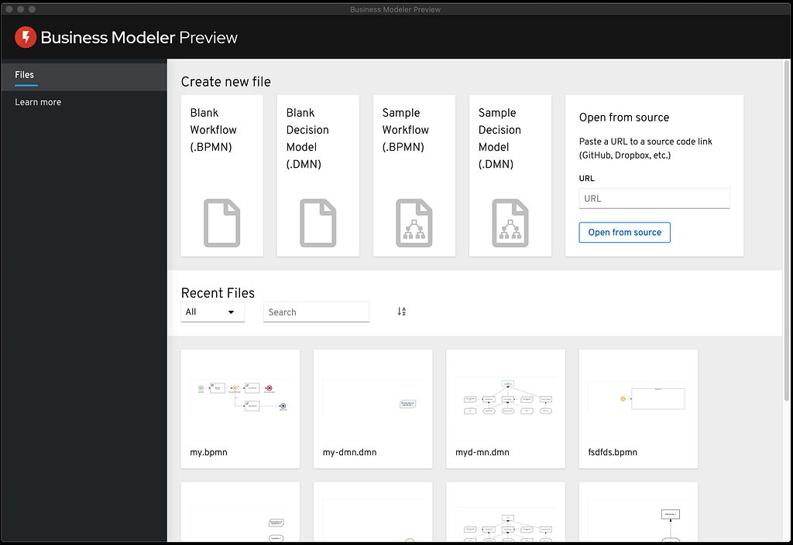
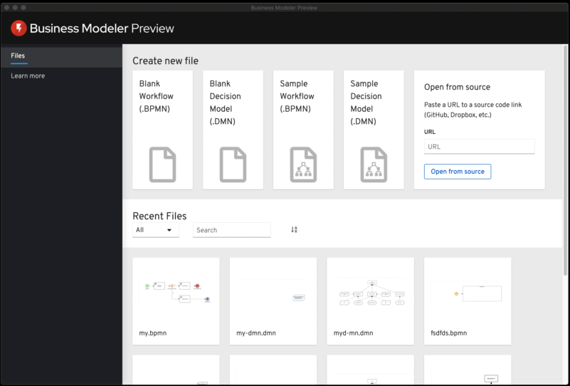
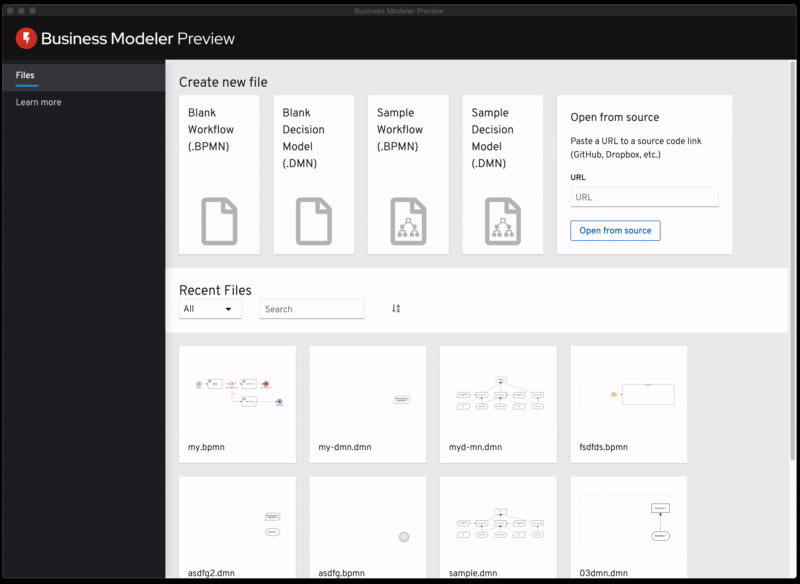

Business Modeler Desktop Preview Released
Last month, our team released a new import piece of our tool belt, the Business Modeler Desktop. This modeler is a multi-platform standalone application that enables you to quickly create and edit DMN and BPMN assets on your Desktop.
This post will do a quick overview of this cool new tool. I hope you guys enjoy it!

DMN and BPMN Modeler
From the initial screen, you will be able to create new BPMN workflows and DMN Decision Models or use our samples as a starting point to your models!

We also provide a quick way to filter your recent files and see previews of your diagrams.
Importing code to Business Modeler
Another cool feature of Business Modeler is the ability to import BPMN or DMN models via URL. For instance, you can import this model from our examples:

Remember to make sure that your models on the URL are text content. If you are using Github, you need to provide the raw link of the desired model. The same applies to Dropbox Links (example).
Learn More
If you are new to BPMN or DMN or maybe want to become an expert, you can go to our ‘Learn More’ section and check useful links for our tutorials, highlighting our “Learn DMN in 15 minutes” web site.
Thank you to everyone involved!
I want to thank everyone involved with this release from the awesome KIE Tooling Team Engineers to the lifesavers QEs and the UX people that help us look awesome!
Business Modeler Desktop Preview Released was originally published in kie-tooling on Medium, where people are continuing the conversation by highlighting and responding to this story.